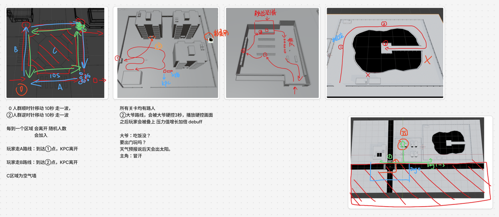
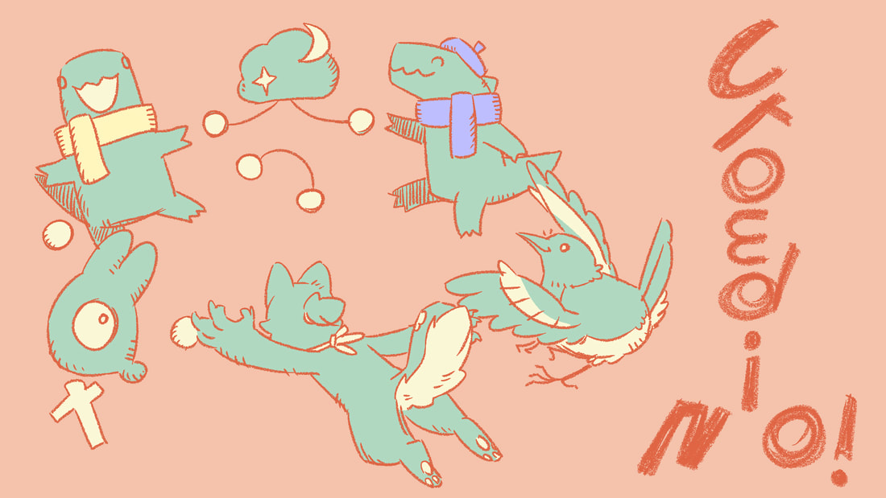

Download and play on Itch.io
CrowdiNO is a game about invisible boundaries. The player controls a shy dinosaur in everyday public spaces. As strangers come closer, stress builds. The core gameplay loop revolves around a simple yet stressful objective: "Try to stay away from passersby, don't let your stress bar max out."
The game is fundamentally about managing distance: how close is too close, and when to move away. But perhaps, in the end, the distance might vanish entirely?
The theme focuses on the moment just before contact: when two things are close, but not touching. We explored this idea through distance and restraint rather than direct interaction. The shy dinosaur grounds this tension in a personal experience. However, as the theme suggests, no matter the distance, contact is eventually made.
In this project, I was responsible for translating the abstract feeling of social anxiety into playable mechanics and level design. My key contributions included:
Before implementing the final art, I mapped out the NPC movement patterns and interactive zones in a white-box environment. These diagrams detail the timing of crowd waves and specific trigger events (e.g., being stopped by an overly chatty neighbor).

Fig 1: White-box planning showing NPC patrol routes, timing waves, and stress-trigger zones.
A game jam is always a collaborative effort. Below is an illustration capturing the charming and slightly chaotic vibe of our team and the game's characters.

Fig 2: Team picture drawn by Quanx Dog.